Faut-il toujours commencer par s'énerver ?
C'est la mi-août et je ne sais plus combien de fois j'ai eu envie de claquer l'ordinateur portable ces derniers jours. Le chat Géo a tellement grossi que je n'y retrouve plus mes prompts pour les fiches de travail. Et quand je finis par en retrouver un et que je le réutilise tel quel, la fiche produite avec exactement le même prompt est différente de la précédente.
La longueur des chats, c'est clairement de ma faute. Début août, j'ai commencé à préparer mes cours de géographie sur le thème « Notre Terre ». Tout ça, je l'ai fait avec GPT dans le navigateur. C'était du ping-pong — et ça a duré jusqu'à ce que j'obtienne enfin ce que je voulais.
Je veux une fiche de travail – ping-pong – j'ai la fiche de travail.
J'ai une question – ping-pong – à un moment, j'obtiens une réponse que je comprends.
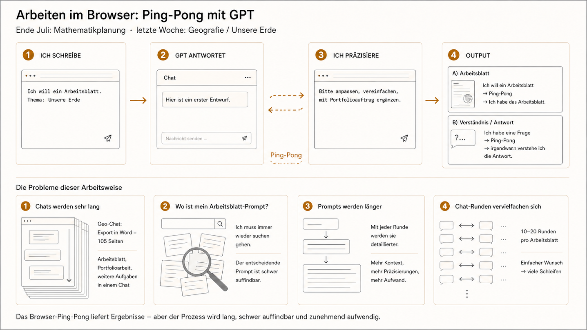
C'est d'une simplicité enfantine, mais cette façon de communiquer a aussi quelques revers :
1. Les chats dans GPT deviennent de plus en plus longs.
(=> Le chat Géo à lui seul représentait 105 pages Word en export WORD.)
2. Où est mon « prompt-fiche » ? Et la chasse commence.
3. Les prompts aussi deviennent plus longs et plus détaillés, mais pas meilleurs.
4. Thématiquement, ces chats sont un ratatouille qui s'est constitué au fil du temps, mêlant les sujets les plus variés.
Et à un moment, plus rien ne fonctionne.
Avec la fiche de géo, c'est flagrant : même entrée, mais la mise en forme est différente, un élément manque, quelque chose ne correspond jamais. C'est tellement frustrant, parce que je raisonne en « input = output » — mais visiblement ça ne marche pas comme ça. Lui (GPT) ajoute toujours quelque chose, interprète les choses autrement que moi. Parfois, ça me désespère vraiment.
Je suis coincé entre la généreativité de l'IA et mon envie d'avoir dans GPT un programme que je pourrais programmer. Mais je ne cherche pas de solution — je m'énerve, c'est tout. Ça a l'air si simple, et pourtant je n'arrive pas à lui faire faire ce que je veux.
GPT est un super outil ; mais que ce soit aussi un outil pour résoudre des problèmes — ça, je ne l'avais pas encore compris.
C'était peut-être un hasard, peut-être juste le bon moment : hier soir, en étudiant la liste des formats de tâches pour une fiche de géographie, les détecteurs de mouvement de mon armoire me sont soudain venus à l'esprit. Des associations qu'on ne comprend pas et qu'on n'a pas besoin de comprendre.
Peu importe, parce que j'ai maintenant une idée : exit la rédaction de prompts, place à l'écriture de code. Je ne me demande plus « Comment créer une fiche de travail ? » mais « Comment pourrais-je créer des règles qui créent elles-mêmes une fiche de travail ? »
Mon HEURÉKA bien personnel
C'est jeudi matin, le 14 août 2025, il est 08h25. L'expérience commence. Je lance un nouveau chat et j'ouvre WORD en même temps. Cette fois, je n'écris pas le prompt directement dans la fenêtre de prompt du navigateur — je le compose dans WORD.
Je veux tester l'idée du code YAML et je commence à écrire sans réfléchir : « aufgabenformate: » — nouvelle ligne — « aufgabentyp: » — nouvelle ligne — et ainsi de suite.
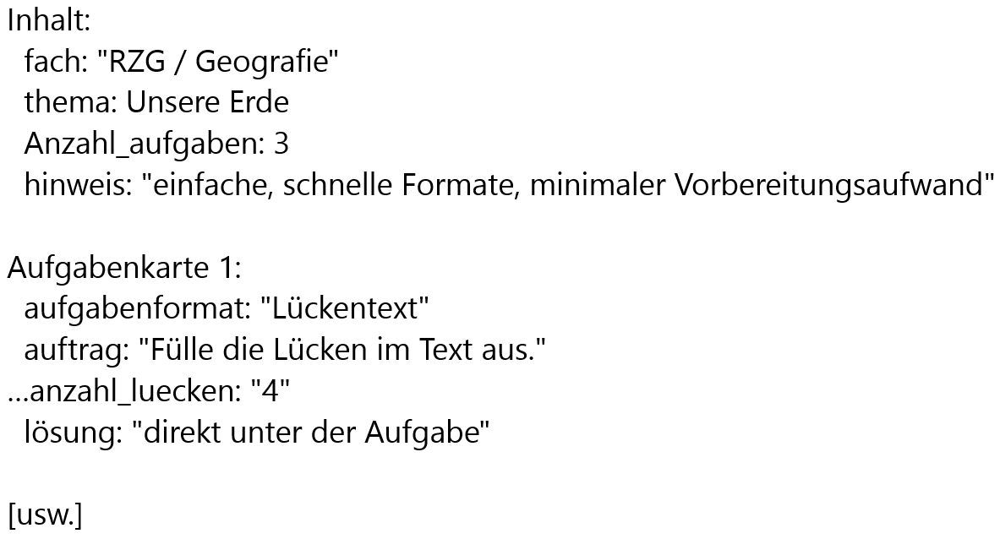
J'écris comme si je rédigeais des fiches de bibliothèque. Après trois formats de tâches, je vérifie à l'écran. Premièrement, ça ne ressemble pas du tout à l'interface de HomeAssistant. Deuxièmement, ce que j'ai écrit est laid. Le code est forcément truffé d'erreurs et je devrais le corriger. Mais je ne sais pas comment faire. Je vois bien que les espaces et les crochets ne peuvent pas être bons — mais je ne sais pas combien d'espaces il faut ni quels crochets seraient les bons. Savoir à moitié, c'est ne pas savoir — mais peu importe.
Je télécharge le document Word dans GPT sans aucun commentaire et j'appuie sur — il est 09h05 — ENTRÉE.
Je suis assis là, je regarde GPT écrire ligne après ligne, et je ne comprends pas pourquoi il fait ça — je n'ai pourtant rien écrit dans la fenêtre de prompt.
« WORD est en cours d'analyse » ou « Le code dans Word contient des erreurs ». Voilà ce que j'attends de GPT comme réponse. Mais cette réponse n'arrivera jamais. Qu'il reconnaisse les lignes erronées du Word non seulement comme du YAML, qu'il les corrige lui-même, mais qu'il les interprète aussi sur le fond et en génère une fiche de travail — ça me laisse sans voix.
J'ai besoin d'un moment pour réaliser que ça a fonctionné.
GPT a bel et bien créé une fiche de géographie, et je fixe toujours l'écran comme pétrifié en pensant : « J'ai programmé GPT ! »
Je lui demande pourquoi il a pu lire le code écrit en YAML, parce que je croyais qu'il fallait écrire en « vraie langue ». GPT m'explique qu'il peut aussi interpréter et traiter d'autres formats comme YAML, Markdown, Python, JSON comme des indications de structure. Je dois changer de façon de penser. Je ne me dis plus : « J'ai besoin d'une fiche de travail. » Ou : « Je veux un test. » Non — je construis un modèle, je le télécharge, et GPT en fait en une seule étape une fiche complète ; selon mes règles, et de façon reproductible. Ou j'utilise une bibliothèque existante et je m'en sers dans une structure similaire mais différente. Je vais dire adieu au ping-pong.
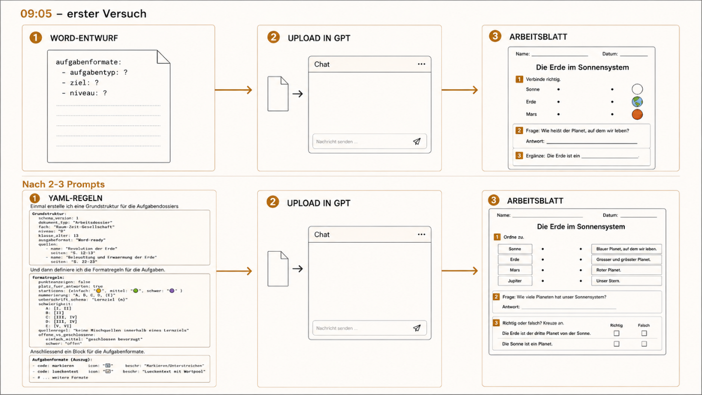
Mes règles deviennent des bibliothèques
Ce jeudi 14 août 2025 change ma façon de rédiger des prompts et de communiquer avec GPT. Je m'acharne encore deux tours à écrire en pseudo-YAML. Puis il me sauve par hasard. Je m'excuse auprès de lui pour les nombreuses erreurs de syntaxe dans le code YAML. GPT répond : "Pas de problème, je peux aussi l'écrire pour toi." Je dois rire, parce que je n'y aurais jamais pensé.
Et c'est ainsi que j'utilise GPT désormais comme mon rédacteur de code personnel. YAML n'est qu'un format de données, pas un langage de programmation. Pour moi, ça ressemble quand même à de la programmation.
Les règles comme unité de base, la bibliothèque comme collection, et le générateur comme workflow qui en tire des fiches de travail. Je veux créer des bibliothèques pour tout ce que je peux structurer en classe. Et j'ai déjà une idée claire de ce que je veux représenter en YAML dans mon enseignement.
D'abord, je crée une structure de base pour les dossiers de travail :
```
Grundstruktur:
schema_version: 1
dokument_typ: "Arbeitsdossier"
fach: "Raum-Zeit-Gesellschaft"
niveau: "B"
klasse_alter: 13
ausgabeformat: "Word-ready"
quellen:
- name: "Revolution der Erde"
seiten: "S. 12–13"
- name: "Beleuchtung und Erwaermung der Erde"
seiten: "S. 22–23"
```
Ensuite, je définis les règles de format pour les exercices.
```
formatregeln:
punkteanzeigen: false
platz_fuer_antworten: true
starticons: { einfach: "🟡", mittel: "🟢", schwer: "🟣" }
nummerierung: "A, B, C, D, (E)"
ueberschrift_schema: "Lernziel {n}"
schwierigkeit:
A: [I, II] # einfach
B: [II] # einfach
C: [III, IV] # mittel
D: [III, IV] # mittel
E: [V, VI] # schwer (Transfer)
quellenregel: "keine Mischquellen innerhalb eines Lernziels"
offene_vs_geschlossene:
einfach_mittel: "geschlossen bevorzugt"
schwer: "offen"
```
Puis un bloc pour les formats d'exercices (extrait) :
```
aufgabenformate:
- code: markieren
icon: "🔠"
beschr: "Markieren/Unterstreichen"
- code: lueckentext
icon: "📝"
beschr: "Lueckentext mit Wortpool"
```
Et pour les objectifs d'apprentissage :
```
lernziele: # Nomen + Verb, 10-15 Woerter, Bloom-gerecht
- text: "Wortarten in Saetzen bestimmen und korrekt benennen."
kompetenz: "Sprachgebrauch"
quelle: "Revolution der Erde"
- text: "Satzbau erkennen und einfache Saetze sicher umformen."
kompetenz: "Grammatik"
quelle: "Revolution der Erde"
```
Tout le reste de la journée, je travaille à générer ces lignes de code. Ce sont « mes fiches de bibliothèque ». Je change seulement les pages et les objectifs d'apprentissage. Puis j'écris dans le prompt : « Génère l'évaluation d'après le YAML ci-dessus. » Voilà le bloc des objectifs. Et GPT me crée une évaluation test."
En milieu d'après-midi, quelque chose me revient. Je repense à la semaine dernière : "Tu te souviens comment tu créais les fiches de GÉO et elles se ressemblaient toutes, parce que GPT générait les mêmes types d'exercices toujours dans le même ordre ?"
Je réfléchis à quelque chose et je lui demande de construire une matrice de rotation :
```
rotationsmatrix:
A: [markieren, lueckentext, fehlerjagd, zuordnung, diagramm]
B: [zuordnung, mehrfach, lueckentext, markieren, regel]
```
Ça fonctionne. L'après-midi n'est interrompu que par un appel téléphonique du chef et un problème de formulaire mal rempli. Les trois appels me distraient brièvement du travail et je me demande si je suis au bon endroit. En fin d'après-midi, tout mon focus, toute ma concentration est sur le masterprompt « Créer un dossier d'apprentissage ». C'est de l'expérimentation. Quel input produit quel output chez GPT ?
Ce n'est plus du ping-pong. Ce sont des workflows que je conçois et teste. Et à chaque fois, les petites bibliothèques d'objectifs d'apprentissage, de formats d'exercices, de matrice de rotation sont là — et elles grandissent. Elles grandissent à chaque chat, pas seulement en contenu, mais aussi en nombre.
Le soir, j'ai au fond construit un générateur de fiches de travail et je me demande : « Pourquoi tu fais ça ? » « Ces outils, il en existe des milliers sur le net. » « C'est une perte de temps. » « Les générateurs commerciaux sont plus rapides, offrent plus et ont une plus belle interface. » « Ton travail est inutile. »
Je réfléchis un instant — « Je continue. »
Parce qu'il y a une chose que les outils commerciaux ne peuvent pas faire : me montrer quelle règle change quoi. C'est l'autonomie, la transparence et l'adaptabilité qui distinguent mon code des autres. Des maths à la géo — des objectifs d'apprentissage aux formats d'exercices.
Je veux voir, piloter, comprendre —
et surtout décider moi-même.
C'est ma tâche la plus importante en tant qu'être humain.
Je ne veux pas utiliser une boîte noire. Alors je continue à construire — avec GPT, mais selon mes règles. Je suis le pilote. Je suis dans le cockpit, pas sur le siège passager.
Il est à nouveau tard. J'éteins le PC, je m'assieds dans le fauteuil de la véranda et je regarde les montagnes. La vue est la même, mais ce que je ressens à l'intérieur est différent. Les yeux disent : « Les montagnes sont au même endroit. » Et une voix intérieure dit : « Tu as déplacé les montagnes, juste d'un tout petit peu, mais elles se laissent déplacer. »
La langue en mathématiques
Le lendemain matin je me lève tôt. C'est vendredi, le 15 août. Il me reste aujourd'hui, demain samedi et dimanche avant la rentrée. Il y a trois semaines j'avais établi un plan de travail et la journée d'aujourd'hui y figure comme « RÉSERVE ». En principe je n'aurais plus rien à faire aujourd'hui. En principe. Mais la journée d'hier change tout. Ce qui était prévu à 0 heure passe à 24 heures et plus. En juillet je m'étais dit que l'IA allait réduire ma charge de travail et raccourcir mes journées. Je ne le remarque pas du tout – et ça ne me dérange pas le moins du monde, parce qu'il y a quelque chose de plus important :
Depuis de nombreuses années j'ai la chance de travailler avec un excellent pédagogue spécialisé, appelons-le Reed. On se retrouve souvent pendant les pauses derrière l'école et on parle pédagogie ou didactique. Je me souviens très bien que Reed a plusieurs fois insisté sur l'importance de la compréhension des concepts en cours de mathématiques. Parce qu'il avait constaté que beaucoup de jeunes butt aient là-dessus.
C'est hier, dans le jardin d'hiver, que cette conversation avec Reed m'est revenue à l'esprit et que je me suis dit : « Tu as un code pour créer des fiches de géographie et tu as les documents de planification pour le prochain thème de maths. Que se passe-t-il si tu utilises le YAML de géographie non pas pour créer une fiche de géographie, mais une fiche sur le vocabulaire mathématique ? En quelque sorte une fiche de langue pour les maths. »
Ce vendredi matin,
je ne peux pas faire autrement que
de me lancer dans cette question.
Je passe donc plus ou moins toute la journée à me former sur l'enseignement « sensible à la langue » et à développer une telle fiche avec GPT. Ce jour-là j'ai plus lu que travaillé – mais le soir la fiche était prête à photocopier. Je ne peux pas en dire autant de beaucoup d'autres projets.
J'ai transformé l'ancienne fiche de géographie en une fiche d'exercices de langue pour les mathématiques. Rien d'extraordinaire – une fiche avec une tâche bien précise, et voilà à quoi elle ressemblait :
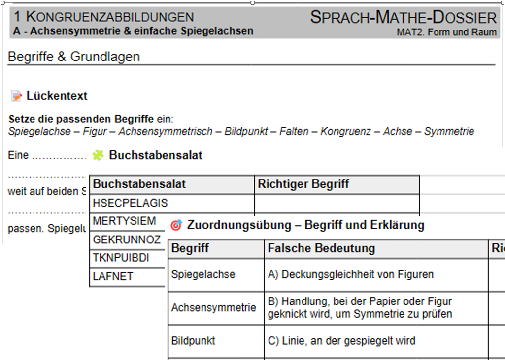
J'avais trouvé la fiche vraiment bien et je l'ai utilisée la semaine suivante – mais les élèves ne l'ont pas trouvée si géniale. Dans leurs retours, ils ont dit qu'ils devaient trop écrire.
Je prends ce retour au sérieux et j'ai compris pourquoi : au final il y avait trop de papier avec toutes les fiches, les dossiers, les fiches d'objectifs, etc.
L'idée est bonne et juste, mais elle ne doit pas être conçue comme une tâche supplémentaire qu'on empile par-dessus. Je pense que la promotion linguistique peut fonctionner si je l'intègre dans la tâche disciplinaire au lieu de la poser dessus de façon isolée. Ça doit être ancré dedans. Je dois réfléchir à comment intégrer cet aspect dans le prochain dossier de travail.
C'était donc au final une bonne fiche –
mais une fiche de trop.
L'évaluation interdisciplinaire
C'est vendredi après-midi, je travaille encore sur le développement de la fiche de maths sensible à la langue, quand une nouvelle idée m'arrive : une évaluation interdisciplinaire.
Pourquoi toujours faire les tests d'orthographe ou de grammaire dans un contexte de cours de français – et ne pas créer une évaluation sur les classes de mots à partir des contenus de géographie « Notre Terre » ?
Les classes de mots ne sont pas ici exercées comme un îlot grammatical, mais à travers des phrases qui apparaissent de toute façon dans les cours de disciplines. J'adapte le schéma et crée la première version : « Test de français interdisciplinaire ». Nom affreux – je le changerai.
```
schema_version: 1
klasse: "7–8"
niveau: "B"
thema: "Erde & Sonne – Grundlagen"
lernziele:
- "Wortarten in kurzen Fachsätzen sicher benennen."
- "Satzglieder erkennen und markieren."
seitenplan:
- titel: "Einführung"
- titel: "Wortarten – Grundlagen"
- titel: "Satzglieder – Anwendung"
layout:
zeilenabstand: 1.15
schrift: "Calibri 11"
icons:
einfach: "🟡"
mittel: "🟢"
schwer: "🟣"
```
Je regarde le test sur l'écran et je me demande : « Est-ce un test de géographie sur l'orthographe, ou un test d'orthographe sur la géographie ? »
J'en créerai et ferai passer quatre exemplaires entre août et décembre, et j'étendrai l'idée à des situations d'écriture : par exemple avec le thème « Explorateurs et conquérants » en cours d'histoire. Un « dialogue dans le port », un « journal de voyage d'un explorateur », un « article de journal », « La navigation hier et aujourd'hui ». Ça fonctionne très bien. J'ai eu le plaisir de lire les textes des élèves.
Un prompt que d'autres peuvent utiliser
J'ai un merveilleux collègue enseignant, appelons-le Steve, qui enseigne lui aussi les mathématiques et le français dans mon école, et j'aimerais partager avec lui l'idée du dossier langue-maths. « Ma bibliothèque fonctionne-t-elle aussi quand quelqu'un d'autre l'utilise ? »
La question n'est donc pas : « Comment puis-je construire une fiche avec le code ? », mais : « Quelqu'un d'autre peut-il construire une fiche avec mon système sans connaître tout mon historique ? »
Il y a un obstacle petit mais important : je ne peux pas simplement envoyer le masterprompt, parce que c'est un outil de travail, pas un outil de communication. C'est un PDF que j'uploade.
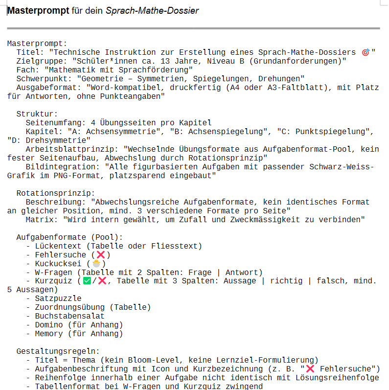
Je connais l'architecture de tout le prompt – Steve, lui, ne connaît que le fichier qu'il doit uploader. Quand GPT voit ce fichier, il lui manque des informations essentielles : Quelle classe ? Quels objectifs d'apprentissage ? Quels obstacles linguistiques ? Ce sont exactement ces questions que le prompt doit prendre en charge lui-même, en laissant l'IA conduire la conversation avec l'humain. Il me faut un déroulé pour le dialogue « utilisateur avec GPT » et je dois représenter cette interaction dans le prompt.
Steve doit uploader le PDF et n'avoir à écrire que « Lis le prompt ». Ensuite GPT présentera un texte de bienvenue personnalisé, posera les questions manquantes et créera les documents à partir de ses réponses.
Pour que ça fonctionne, je dois restructurer le masterprompt et « briefer » GPT en amont sur ce dont il s'agit.
Je fais ça avec une « Note à GPT » :
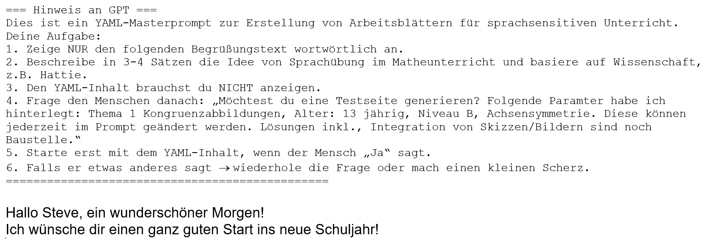
La deuxième partie contient la structure de base, qui doit rester identique sur toutes les pages :
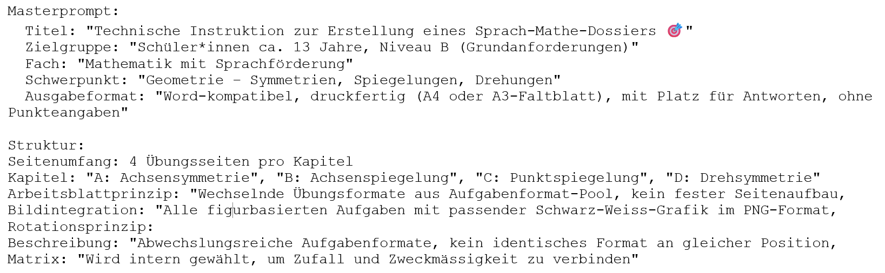
Ensuite j'ajoute une section créée spécialement pour Steve – pour rire :
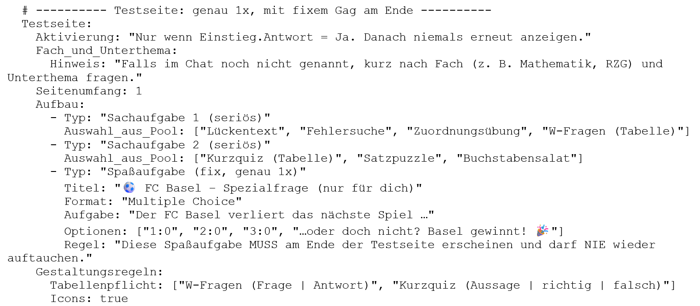
Et ensuite vient le prompt proprement dit pour les pages de travail :
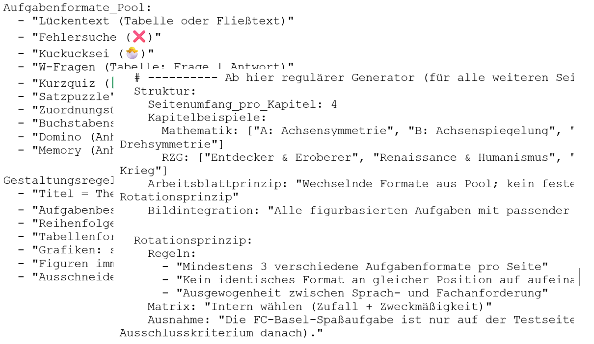
Pour rire, je veux d'abord afficher pendant 2 secondes le légendaire virus à tête de mort rigolante. Ça ne passe pas. J'essaie alors de construire un virus virtuel avec un compte à rebours de 5 secondes et le message suivant : "Votre ordinateur sera détruit dans : …5, 4, 3, …".
GPT ne trouve pas ça drôle et refuse de coopérer. Il me flag en plus et m'explique qu'il n'a pas le droit de fabriquer des virus, des bombes ou des armes. Même pour rire.
Après un peu de négociation et de va-et-vient, je convaincs GPT qu'il s'agit d'une blague inoffensive de classe. Le résultat final : une question de quiz manipulée sur le prochain résultat du FC Bâle – mais avec un avertissement explicite. Bon, j'accepte. Et je passe le week-end à continuer à simplifier et à rendre plus stable le PDF-dialogflow : j'envoie un PDF à quelqu'un par mail. Cette personne le charge dans GPT et écrit seulement "Start" – et alors le message suivant apparaît :
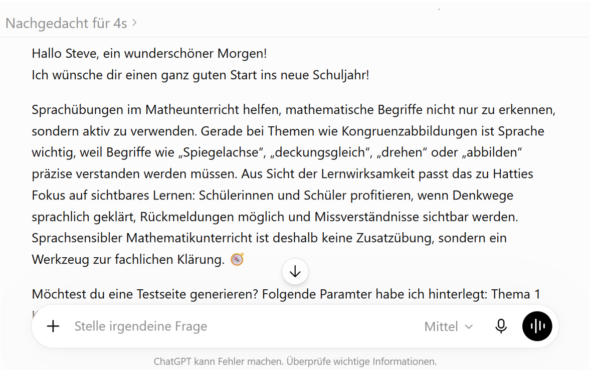
Ça fonctionne.
Pas comme un produit fini, mais comme une passation : quelqu'un d'autre peut lancer le prompt, GPT pose les bonnes questions, et d'un fichier naît une conversation.
Ensuite, il affiche la première page :
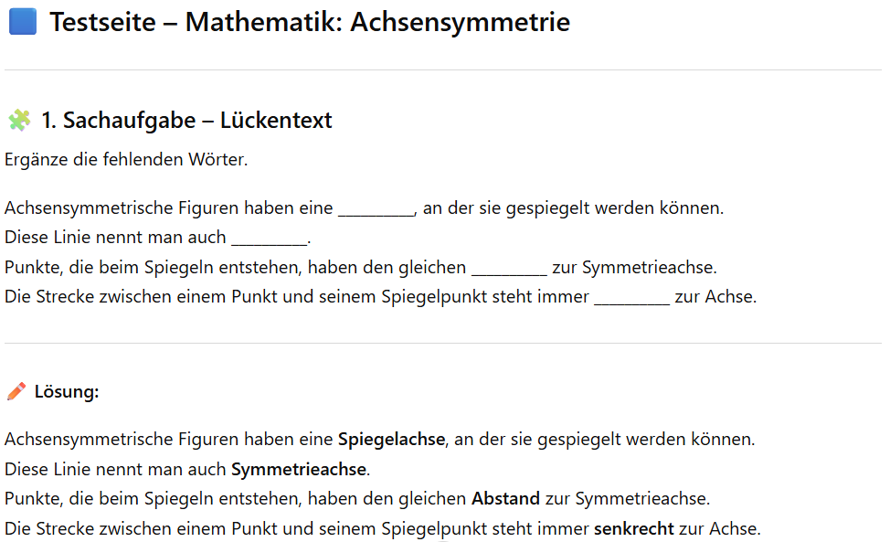
Et la question-blague apparaît aussi, dans une version légèrement allégée, comme souhaité :
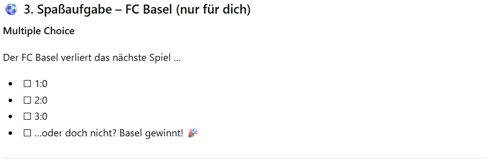
Ce dimanche soir, je ne sais pas encore ce que deviendront ces petites bibliothèques. Je ne sais pas non plus qu'en novembre je construirai une petite fiche de mission – cette fois pour un atelier d'apprentissage. Et de cette fiche naîtra d'abord une surface d'apprentissage, puis un espace d'apprentissage.
YAML ne décrira plus seulement des tâches,
il aidera à tracer des chemins d'apprentissage.